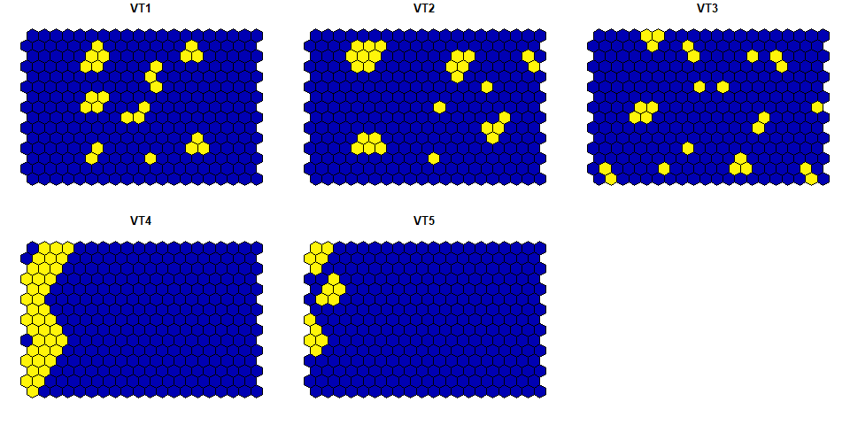

A package that enables quantifying landscape diversity and structure at multiple scales. For these purposes Juhász-Nagy’s functions, i.e. compositional diversity (CD) and associatum (AS), are calculated.
Installation
You can install the development version of LandComp using the following command:
install.packages("devtools")
devtools::install_github("ladylavender/LandComp")Example
Example regular grids represent demonstrative spatial arrangements. They reflect a typical case when having presence/absence data on some landscape classes (e.g. vegetation types here) along a landscape. Note, there are three requirements of using the LandComp package:
- the landscape data should be numeric binary, i.e. it should contain 0 or 1 values
- the geometry of the landscape data should be a regular square or hexagonal grid
- the geometry of the landscape data should have projected coordinates (i.e. WGS84 is not eligible)
Regular square grid data
The structure and the visualization of the example square grid data:
suppressPackageStartupMessages(library("sf"))
library(LandComp)
data("square_data")
plot(square_data)
str(square_data)
#> Classes 'sf' and 'data.frame': 300 obs. of 6 variables:
#> $ VT1 : num 0 0 0 0 0 0 0 0 0 0 ...
#> $ VT2 : num 0 0 0 0 0 0 0 0 0 0 ...
#> $ VT3 : num 0 0 0 0 1 1 0 0 0 0 ...
#> $ VT4 : num 0 0 0 0 0 0 0 1 1 1 ...
#> $ VT5 : num 0 0 0 0 0 0 0 0 0 1 ...
#> $ geometry:sfc_POLYGON of length 300; first list element: List of 1
#> ..$ : num [1:5, 1:2] 400000 400000 405000 405000 400000 ...
#> ..- attr(*, "class")= chr [1:3] "XY" "POLYGON" "sfg"
#> - attr(*, "sf_column")= chr "geometry"
#> - attr(*, "agr")= Factor w/ 3 levels "constant","aggregate",..: NA NA NA NA NA
#> ..- attr(*, "names")= chr [1:5] "VT1" "VT2" "VT3" "VT4" ...Two values of CD and AS measuring landscape diversity and structure can be calculated as e.g.
LandComp(x = square_data, aggregation_steps = 0:1)
#> AggregationStep SpatialUnit_Size SpatialUnit_Area SpatialUnit_Count
#> 1 0 1 2.50e+07 300
#> 2 1 9 2.25e+08 234
#> UniqueCombination_Count CD_bit AS_bit
#> 1 13 2.755349 0.1709469
#> 2 18 3.176364 1.0874836Regular hexagonal grid data
The structure and the visualization of the example hexagonal grid data:

str(hexagonal_data)
#> Classes 'sf' and 'data.frame': 300 obs. of 6 variables:
#> $ VT1 : num 0 0 0 0 0 0 0 0 0 0 ...
#> $ VT2 : num 0 0 0 0 0 0 0 0 0 0 ...
#> $ VT3 : num 0 0 0 0 0 0 0 0 0 0 ...
#> $ VT4 : num 1 1 0 1 1 1 0 1 1 1 ...
#> $ VT5 : num 0 0 1 1 0 0 1 0 0 1 ...
#> $ geometry:sfc_POLYGON of length 300; first list element: List of 1
#> ..$ : num [1:7, 1:2] 649500 649000 649000 649500 650000 ...
#> ..- attr(*, "class")= chr [1:3] "XY" "POLYGON" "sfg"
#> - attr(*, "sf_column")= chr "geometry"
#> - attr(*, "agr")= Factor w/ 3 levels "constant","aggregate",..: NA NA NA NA NA
#> ..- attr(*, "names")= chr [1:5] "VT1" "VT2" "VT3" "VT4" ...
LandComp(x = hexagonal_data, aggregation_steps = 0:1)
#> AggregationStep SpatialUnit_Size SpatialUnit_Area SpatialUnit_Count
#> 1 0 1 866025.4 300
#> 2 1 7 6062177.8 234
#> UniqueCombination_Count CD_bit AS_bit
#> 1 12 1.972863 0.1256525
#> 2 16 3.422409 0.5394512For further information and examples, see both the vignette of the package and ?LandComp after installing the package.
Note, if you would like to view the vignette from R using the code vignette("LandComp"), you should install the package using the following command:
devtools::install_github("ladylavender/LandComp", build_vignettes = TRUE)